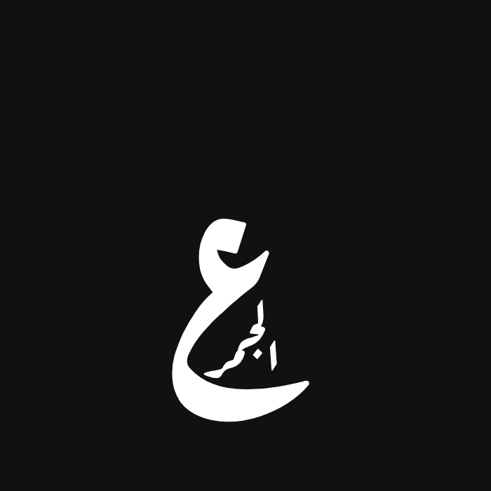
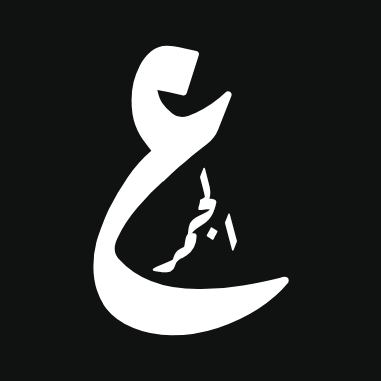
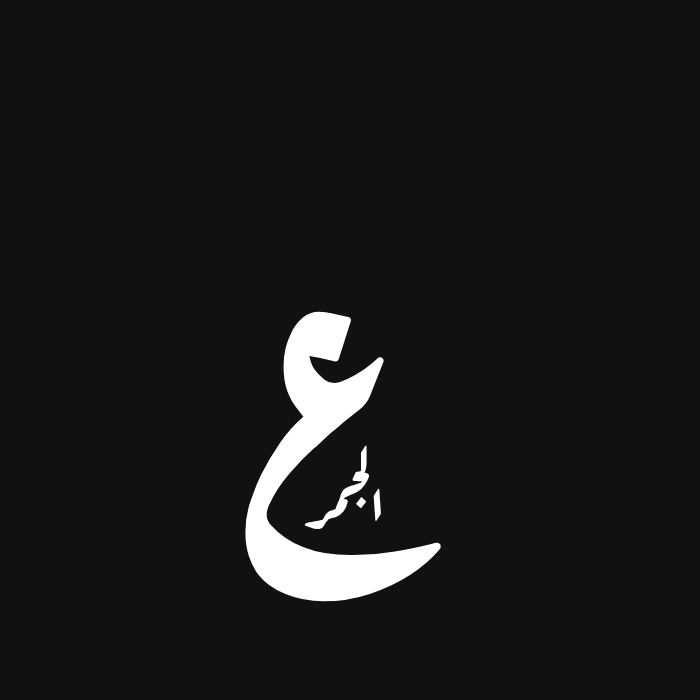
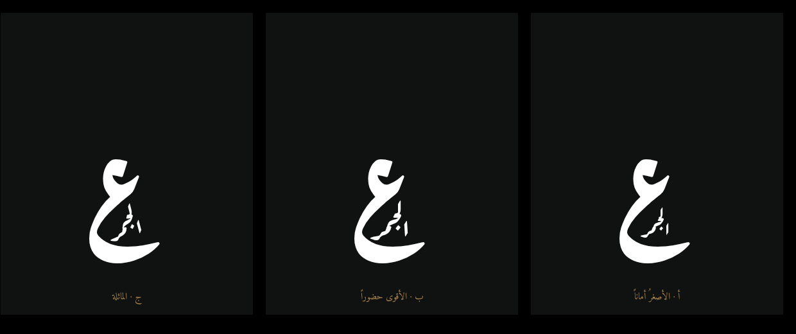
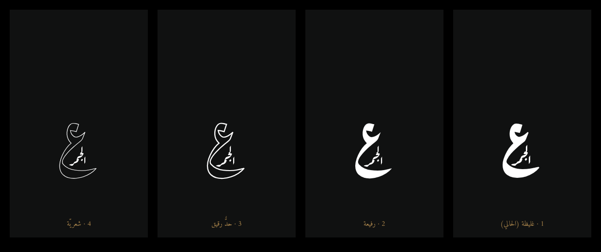
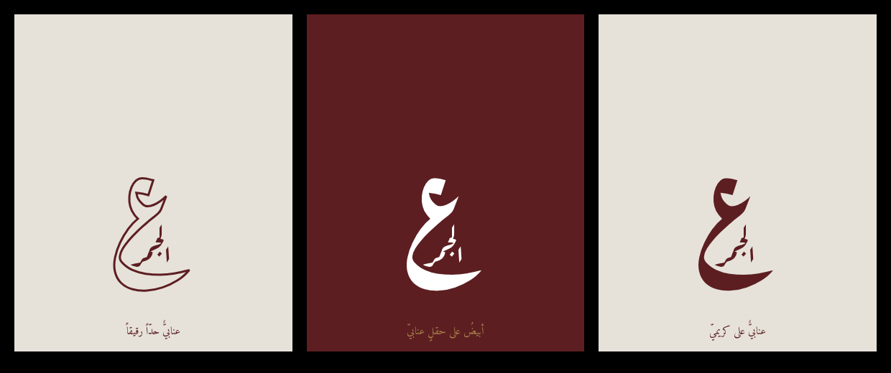

أبيضُ ساطعٌ على فحميّ · خطُّ رقعةِ عارف · العينُ كبيرةٌ والكلمةُ في جوفِ قوسِها، كما طلبتَ.
العينُ نفسُها في الثلاثة. والمتغيّرُ وحدَه حجمُ الكلمةِ في الجوفِ وميلُها.




رقعةُ عارفَ ليست خطّاً متغيّراً: وزنان فقط. فالدرجةُ الثالثةُ والرابعةُ حدٌّ خارجيٌّ وجوفٌ مفرَّغ — أرقُّ ما يُمكن بلا تشويهِ رسمِ الحرف.

وأقولها قبل أن تختار: الدرجةُ الرابعةُ (الشعريّة) تَختفي عند الطبعِ على ورقٍ ماصٍّ وفي الشاشاتِ الصغيرةِ وعلى الحفر. وأوصي بالثالثة إن أردتَ الفخامة، وبالثانيةِ إن أردتَ الأمانَ في كلِّ استعمال.

| الموديل | نسبةُ التبايُن | الحكم |
|---|---|---|
| أبيضُ على فحميّ | 18.91:1 | ممتاز |
| أبيضُ على حقلٍ عنابيّ | 12.55:1 | ممتاز |
| عنابيٌّ على كريميّ | 9.72:1 | ممتاز |
| عنابيٌّ على فحميّ | 1.51:1 | ساقط — وحدُّ الشكلِ الكبيرِ 3:1 |
ولهذا لا يُوضع العنابيُّ على الفحميّ: نصفُ الحدِّ تقريباً، فيُرى لطخةً داكنةً لا شعاراً. والعنابيُّ موضعُه سطحٌ فاتح — قائمةٌ وكيسٌ وبطاقةٌ وورق — أو يُعكَس فيصير الحقلُ عنابيّاً والعلامةُ بيضاء.
كلمةٌ بخمسةِ حروفٍ داخلَ قوسِ حرفٍ تصير خمسَ أخماسِه: تحت 46 بكسلاً تُقرأ «الجمر» لطخةً. فالعلامةُ نسختان — المركّبةُ للواجهةِ واللوحةِ والتغليف، والعينُ وحدَها لأيقونةِ المتصفّحِ وصورةِ حسابِ إنستغرامَ وختمِ الفاتورة. وهذه هي العينُ عند 104 و46 و26 بكسلاً — تصحّ في الثلاثة.
| الوضع | لا تَلمس حبرَ العين | وهي داخلَ القوس |
|---|---|---|
| ب | خلوصٌ تامّ | نعم |
| ج | خلوصٌ تامّ | نعم |
| أ | خلوصٌ تامّ | نعم |
| د (مرفوضة) | تلاصقٌ في 159 بكسل | نعم |
ولولا هذا القياسُ لَبقي وضعٌ رابعٌ معروضاً عليك وهو مكسور: عينِي قالت إنّه سليمٌ، وقاسَته الأداةُ مُلتصقاً.
1. أيُّ وضعٍ — ب أم ج أم أ؟
2. العينُ وحدَها نسخةً للمقاساتِ الصغيرة — تُقرّها؟
ومتى أقررتَ، أُعيدُ بناءَ شكلِ الموقعِ كلِّه على هذه العلامة.